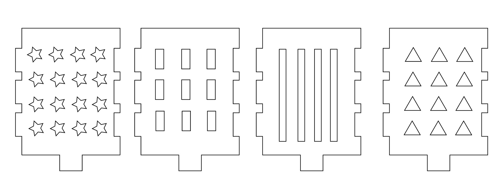
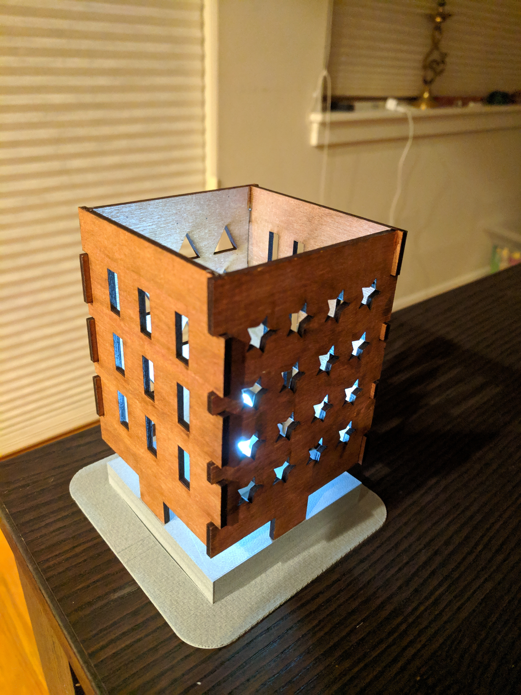

Assignment 3: 3D Printed & Laser Cut Lamp

For this assignment, I created a lamp box with a 3D printed base, & laser cut wood panels.
Source Files
Rhino file
Dremel file
AI working file
Printer settings
3D Printer settings: Nozzle temp: 235/280 degree C, Platform temp: 35/100 degree C, Print speed: 100%, Fan speed: 100%
Laser Printing settings: 100% power, 20% speed, 50% freq.
I browsed through many lamp design options before deciding to create a lamp box. My base was 3D printed, while the 4 sides were created by laser cutting a wood panel.
Rhino & Grasshopper steps
I created a circular base shape & used rectangle components to create the slots. I utilized the number slider for 4 parameters: 1) Radius of circle, x & y length of rectangle, & count of rectangles.

Circular components
I attempted creating a hexagon as one of the shapes, but in the ended went with 2 circular shapes, with different radius, & Y axis for the rectangle slots.

3D Printing
My first 3D printing output had to be thrown away since the printer was not working properly. I changed the printer & was happy with the output.
Laser printing
I used a wood panel with 2.5mm thickness for the laser printing.
I created 4 rectangular frames with different patterns.

Final Output
Image of the final lamp design.

Peer Attributions
Thank you Christa Keizer, Leo Salemann, & Joshua for helping out with the 3D printing, Rhino tips, & AI file settings.